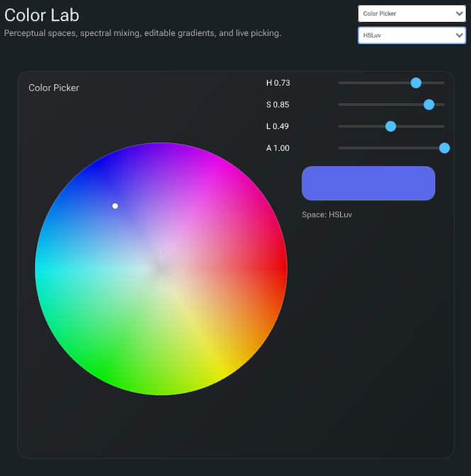
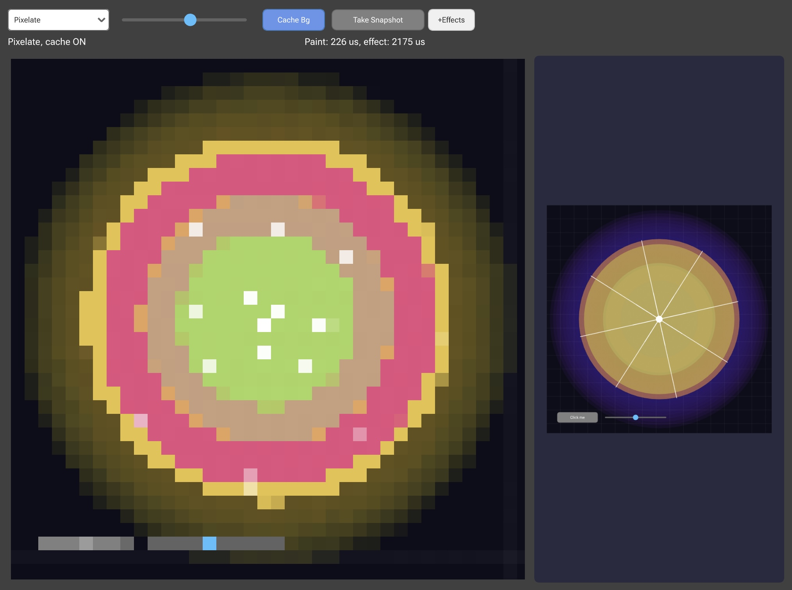
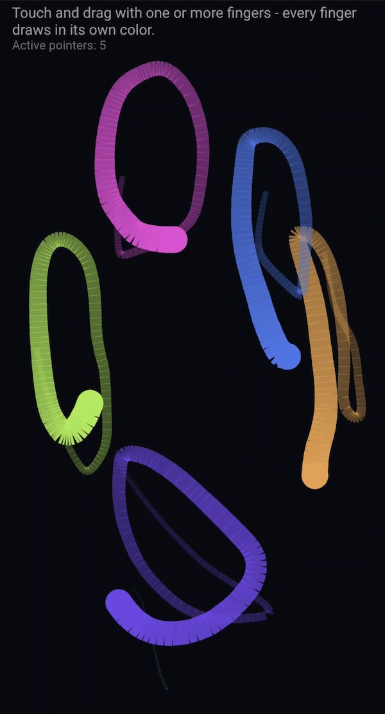
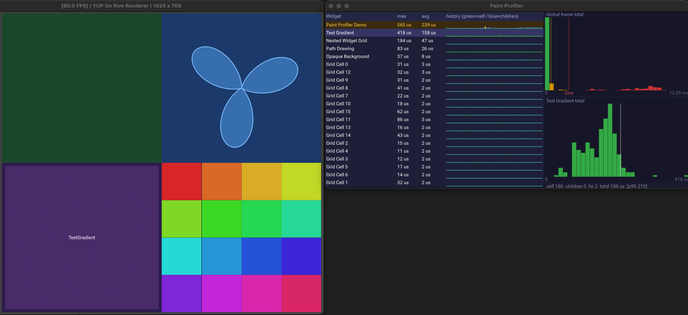
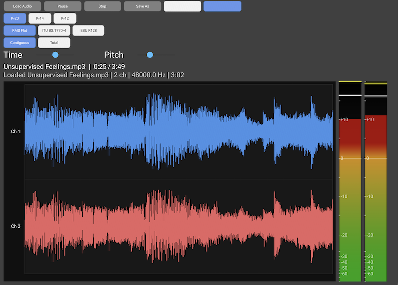
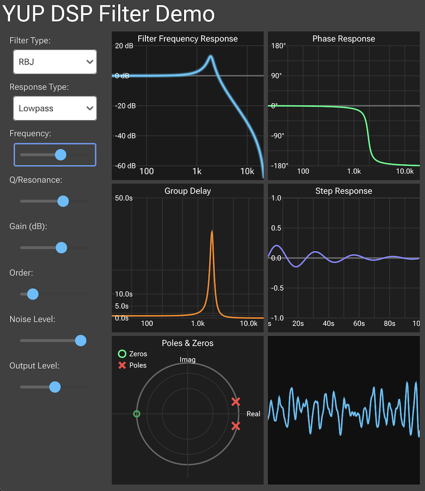
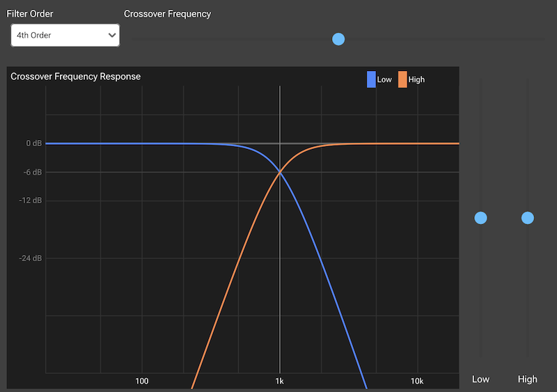
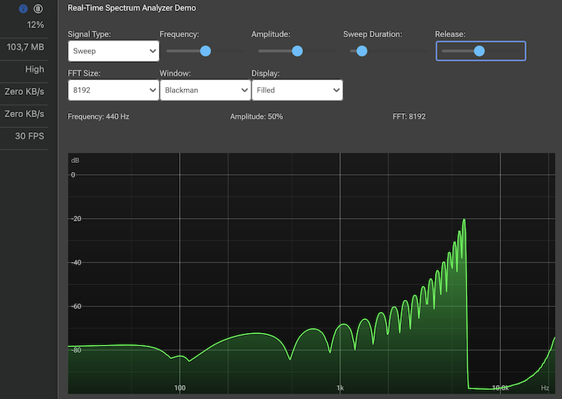

Rendered by YUP, every pixel
Everything below comes from the example apps in the repository. The ones with a live demo run right in your browser.
Graphics and GPU
Vector rendering on Rive, plus RHI compute and 3D.


Interface
Widgets and tools built with the GUI toolkit.






Audio
Graph editing, plugin hosting and audio visualization.


DSP
Filter design, crossovers and spectral analysis from yup_dsp.


